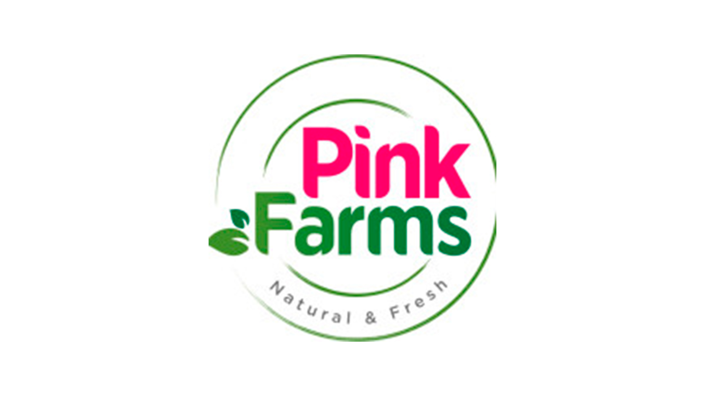

Conhecida como a maior fazenda vertical da América Latina, a Pink Farms é localizada no estado de São Paulo,
seu nome é baseado na cor dos leds que eles utilizam para substituir a luz solar. A Pink Farms conta com uma fazenda urbana
que produz alimento que distribui para varias marcas de super mercados nacionais.

Acesse ao link abaixo para poder explorar o site deles:
"Nossa missão é APROXIMAR O PLANTAR DO COMER. Queremos que você não só saiba, mas veja de onde vem os
seus alimentos e se reconecte com a natureza." Fazenda Cubo. Conhecidos por essa missão a Fazenda Cubo se
encontra em São Paulo, com uma loja física na própria fazenda vertical, além de possuir um sistema de delivery também.
Acesse o linkl abaixo para poder explorar o site deles: